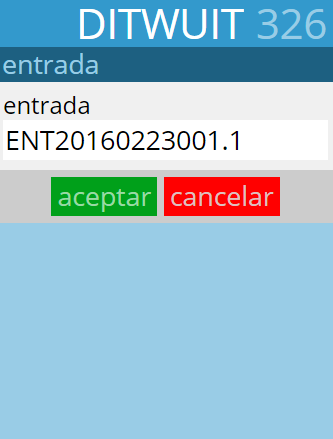
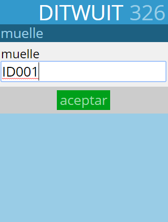
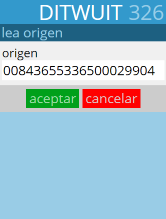
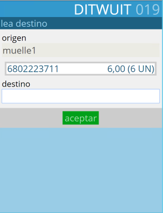
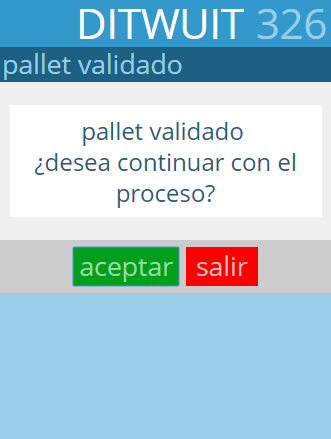

Línea de Producción¶
{kind=link}
El proceso de línea de producción es similar al de Validación de etiqueta vacía con el añadido de que se solicita la ubicación destino para mover la mercancía desde el muelle (la línea de producción) a su ubicación definitiva.
{kind=link}
Primero se solicita el código de la entrada a la que se va a asociar la mercancía a recibir de la línea de producción.
{kind=link}
A continuación se solicita el muelle asociado a la línea de producción. Es la ubicación donde se va a registrar el bulto como ubicado una vez se valide.
{kind=link}
Seguidamente se pide que se lea el contenedor a recibir de la línea de producción.
{kind=link}
Al detectar que el SSCC no está aún en DITWUIT se solicita que se lean los identificadores de aplicación (IA) que identifican la información del artículo.
{kind=link}
A continuación procede a solicitar la ubicación del palet en su ubicación destino.
{kind=link}
Una vez finalizado el proceso de validación del bulto se procede, si está así parametrizado, a mostrar el mensaje de palet validado para proceder con el siguiente.